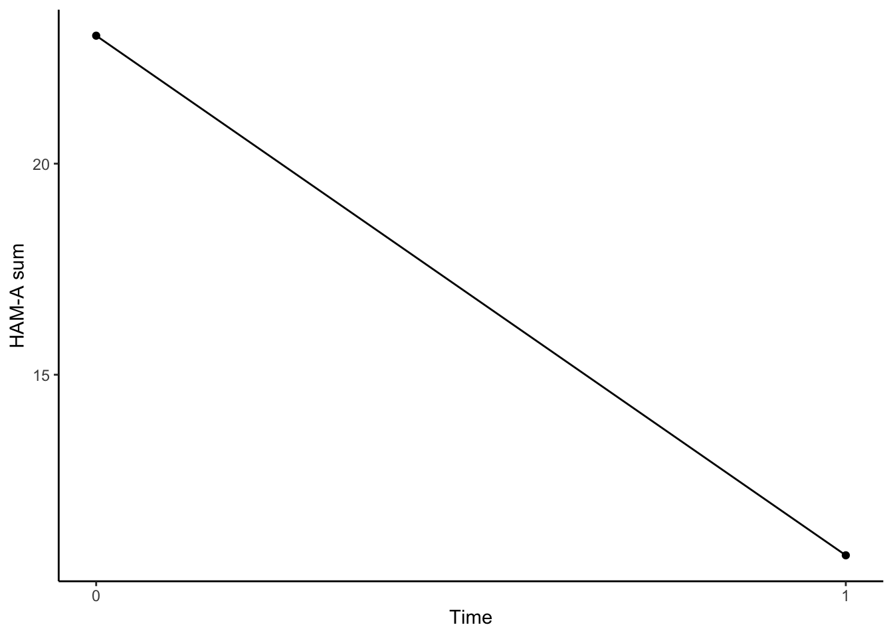
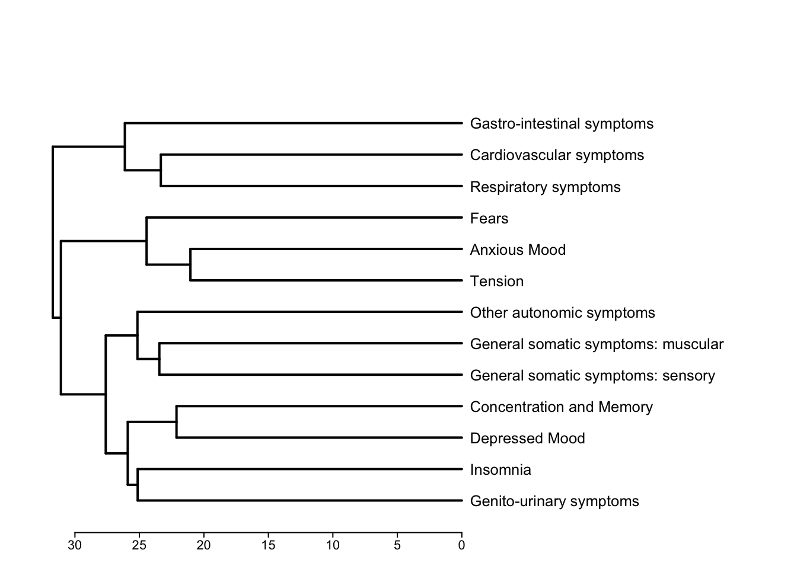
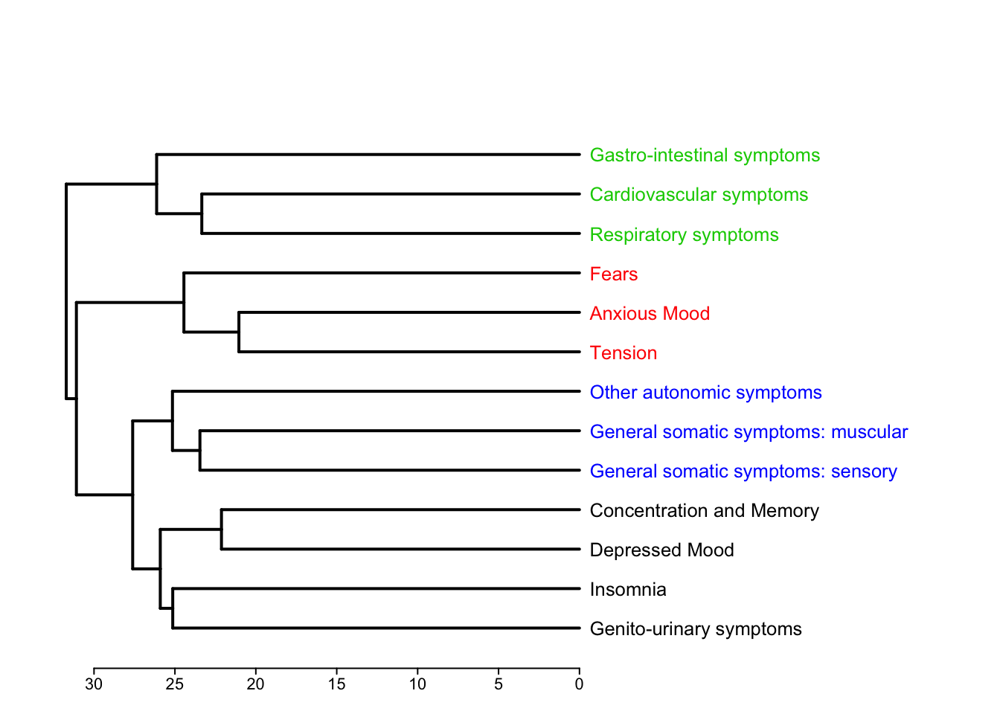
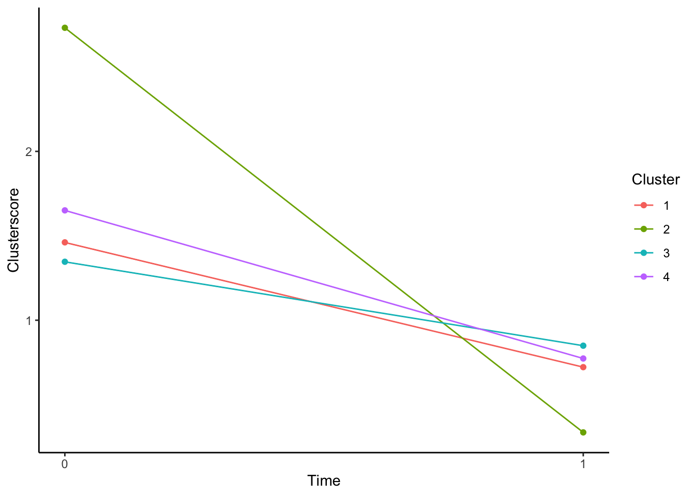
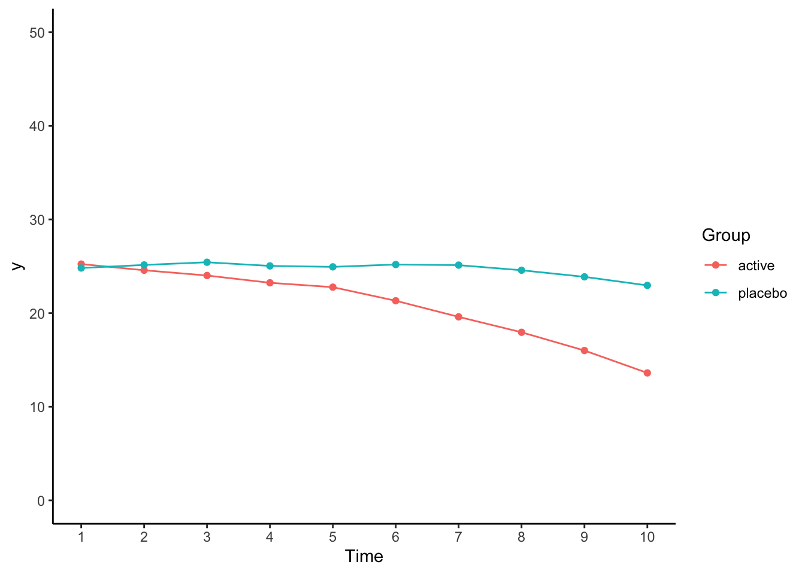
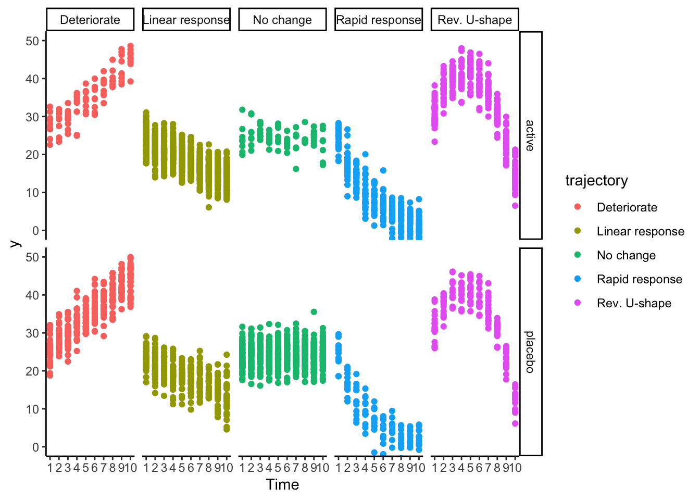
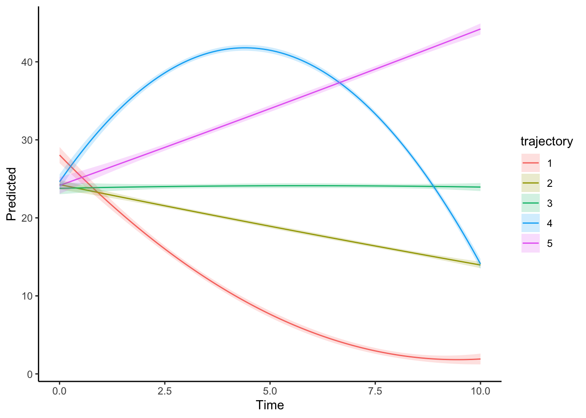
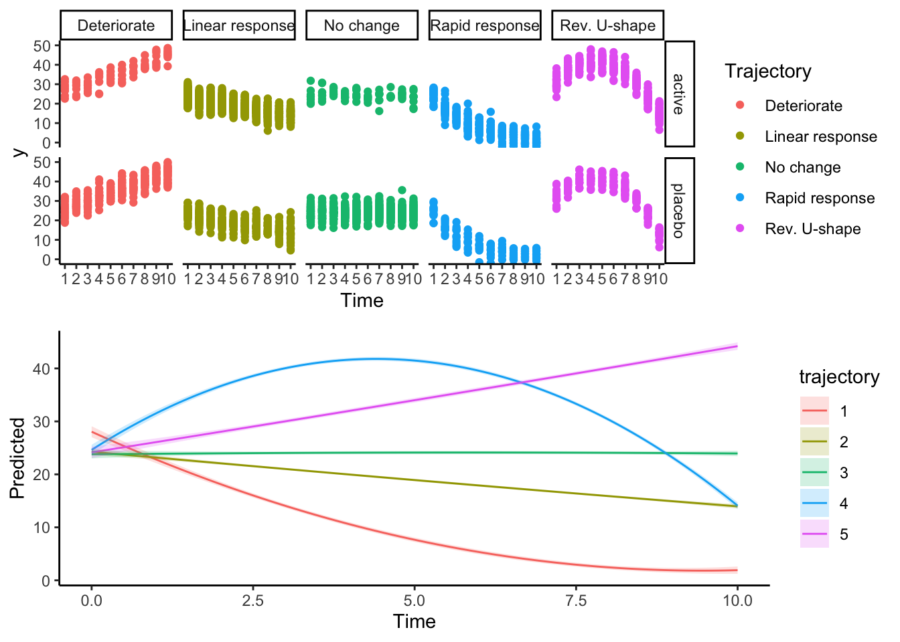

Kapitel 3 Re-analysis of RCT data
3.1 Exercise 1: Symptom Clusters
3.1.1 Simulate Practice Data
First let us simulate some practice data. The data are based on the items of the Hamilton-Anxiety-Rating Scale.
Initially we determine a sample size:
n = 350 # number of individualsThen the names of the items:
hama_names = c("Anxious Mood",
"Tension",
"Fears",
"Insomnia",
"Concentration and Memory",
"Depressed Mood",
"General somatic symptoms: muscular",
"General somatic symptoms: sensory",
"Cardiovascular symptoms",
"Respiratory symptoms",
"Gastro-intestinal symptoms",
"Genito-urinary symptoms",
"Other autonomic symptoms")And finally mean values and standard deviations as well as a plausible covariance structure:
hama_means = c(2.9669421,
2.8044077,
2.4559229,
2.4297521,
1.3815427,
1.3071625,
1.6129477,
1.5633609,
1.4531680,
1.0330579,
1.7190083,
0.6694215,
1.6198347)
hama_means_post = c(2.9669421-2.3,
2.8044077-2.4,
2.4559229-2.2,
2.4297521-0.8,
1.3815427-0.7,
1.3071625-1.2,
1.6129477-0.5,
1.5633609-0.4,
1.4531680- 0.2,
1.0330579-0.4,
1.7190083-0.1,
0.6694215-0.1,
1.6198347-0.8)
hama_sds = c(0.7136179,
0.8339568,
1.1314254,
1.2283532,
1.2313786,
1.2454069,
1.2715661,
1.2264810,
1.2583008,
1.2200659,
1.2815280,
1.0691029,
1.1585213)
hama_cor = read.csv("https://raw.githubusercontent.com/stephangoerigk/DZP_Workshop_Slides/master/hamacor.csv")
hama_cor = as.matrix(hama_cor[,-1])Now, let us simulate:
# Create baseline data
set.seed(123)
data_cluster_bl = round(
faux::rnorm_multi(n = n,
mu = hama_means,
sd = hama_sds,
r = hama_cor,
varnames = hama_names,
empirical = F), 2)
data_cluster_bl$id = row.names(data_cluster_bl)
data_cluster_bl$time = 0
# Create post-treatment data
data_cluster_post = round(
faux::rnorm_multi(n = n,
mu = hama_means_post,
sd = hama_sds,
r = hama_cor,
varnames = hama_names,
empirical = F), 2)
data_cluster_post$id = row.names(data_cluster_post)
data_cluster_post$time = 1Let us briefly look at the data:
psych::describe(data_cluster_bl)## vars n mean sd median trimmed mad
## Anxious Mood 1 350 2.97 0.71 2.98 2.98 0.67
## Tension 2 350 2.80 0.83 2.84 2.80 0.85
## Fears 3 350 2.43 1.08 2.45 2.45 1.07
## Insomnia 4 350 2.38 1.21 2.26 2.36 1.20
## Concentration and Memory 5 350 1.43 1.19 1.41 1.44 1.10
## Depressed Mood 6 350 1.35 1.23 1.40 1.35 1.19
## General somatic symptoms: muscular 7 350 1.68 1.28 1.69 1.70 1.32
## General somatic symptoms: sensory 8 350 1.65 1.15 1.56 1.64 1.14
## Cardiovascular symptoms 9 350 1.38 1.34 1.37 1.37 1.28
## Respiratory symptoms 10 350 0.98 1.23 0.96 0.98 1.26
## Gastro-intestinal symptoms 11 350 1.69 1.31 1.63 1.65 1.14
## Genito-urinary symptoms 12 350 0.68 1.04 0.64 0.69 1.00
## Other autonomic symptoms 13 350 1.62 1.14 1.63 1.65 1.16
## id* 14 350 175.50 101.18 175.50 175.50 129.73
## time 15 350 0.00 0.00 0.00 0.00 0.00
## min max range skew kurtosis se
## Anxious Mood 0.62 5.42 4.80 -0.07 0.17 0.04
## Tension 0.23 5.25 5.02 -0.05 0.03 0.04
## Fears -1.38 5.27 6.65 -0.21 0.10 0.06
## Insomnia -1.11 6.04 7.15 0.17 -0.03 0.06
## Concentration and Memory -1.92 4.96 6.88 -0.07 0.12 0.06
## Depressed Mood -1.96 5.61 7.57 0.03 0.01 0.07
## General somatic symptoms: muscular -2.39 5.33 7.72 -0.12 -0.32 0.07
## General somatic symptoms: sensory -1.46 4.59 6.05 0.11 -0.35 0.06
## Cardiovascular symptoms -2.41 5.23 7.64 0.07 -0.05 0.07
## Respiratory symptoms -2.72 4.44 7.16 -0.07 -0.29 0.07
## Gastro-intestinal symptoms -2.26 6.53 8.79 0.22 0.49 0.07
## Genito-urinary symptoms -2.13 3.86 5.99 0.01 -0.06 0.06
## Other autonomic symptoms -2.86 4.55 7.41 -0.29 0.28 0.06
## id* 1.00 350.00 349.00 0.00 -1.21 5.41
## time 0.00 0.00 0.00 NaN NaN 0.00Usually we would go on and create a sum score by adding up all the items:
data_cluster_bl$sum = rowSums(data_cluster_bl[, 1:13])
data_cluster_post$sum = rowSums(data_cluster_post[, 1:13])Now let us combine the datasets:
data_cluster = rbind(data_cluster_bl, data_cluster_post)3.1.2 Traditional Approach
Plot the data as we usually would using an average group trajectory:
ggplot(data = data_cluster, aes(x = time, y = sum)) +
stat_summary(geom = "line", fun = "mean") +
stat_summary(geom = "point", fun = "mean") +
scale_x_continuous(breaks = c(0,1)) +
labs(y = "HAM-A sum", x = "Time") +
theme_classic()
Analyze using LMM:
summary(lmer(sum ~ time + (1|id), data = data_cluster))## boundary (singular) fit: see ?isSingular## Linear mixed model fit by REML. t-tests use Satterthwaite's method [
## lmerModLmerTest]
## Formula: sum ~ time + (1 | id)
## Data: data_cluster
##
## REML criterion at convergence: 4275.9
##
## Scaled residuals:
## Min 1Q Median 3Q Max
## -3.4157 -0.6507 -0.0258 0.6965 3.2589
##
## Random effects:
## Groups Name Variance Std.Dev.
## id (Intercept) 5.860e-16 2.421e-08
## Residual 2.635e+01 5.133e+00
## Number of obs: 700, groups: id, 350
##
## Fixed effects:
## Estimate Std. Error df t value Pr(>|t|)
## (Intercept) 23.0323 0.2744 698.0000 83.95 <2e-16 ***
## time -12.3096 0.3880 698.0000 -31.73 <2e-16 ***
## ---
## Signif. codes: 0 '***' 0.001 '**' 0.01 '*' 0.05 '.' 0.1 ' ' 1
##
## Correlation of Fixed Effects:
## (Intr)
## time -0.707
## optimizer (nloptwrap) convergence code: 0 (OK)
## boundary (singular) fit: see ?isSingular3.1.3 Prepare for Clustering
Let us see if we can find some item clusters in the baseline data to get a more differentiated picture:
For this we first need to drop the id, sum, and time columns:
data_cluster_bl = BBmisc::dropNamed(data_cluster_bl, drop = c("time", "id", "sum"))
data_cluster_post = BBmisc::dropNamed(data_cluster_post, drop = c("time", "id", "sum"))As a first step, it makes sense to scale the data, as not all item formats are identical in all scales:
data_cluster_bl_s = scale(data_cluster_bl)Next, we will transpose the data, since we want to cluster items into people and not vice versa:
data_transposed = t(na.omit(data_cluster_bl_s))Now we will creat a distance matrix to determine the proximity between item responses. The euclidean distance is a commonly used measure for psychometric measures (another one is the manhattan distance).
d = dist(data_transposed, method = "euclidean")And now, let us cluster the data. We use the ward.D2 method, this way distances are squared ahead of clustering (no problem with negative data):
clust = hclust(d, method = "ward.D2")After the clustering is finished we should inspect the result. A common way to look at clustering solutions is the dendrogram:
dend <- as.dendrogram(clust, hang = -1)
labels_cex(dend) = 2
marg = c(4, 4, 10, 35)
par(mar = marg, font = 1, cex = 0.4, cex.axis = 1.7, cex.lab = 2)
plot(rev(dend), horiz = T, edgePar = list(lwd = 2))
The earlier two items merge in the dendrogram, the more similar they were scored by the patients. We now have a good idea, which items belong together. However, now we need to decide how many clusters to retain, i.e. where to “cut” our dendrogram. This step is called pruning.
We will use the cutreeDynamic() function from the dynamicTreeCut package. It has many advantages over traditional methods (e.g. gap statistic, silhouette method) including that it is more sensitive for detection of distinct classes and more stable in bootstrapping procedures.
The argument minClusterSize should be set to 1 and the method should be "hybrid".
pruned = dynamicTreeCut::cutreeDynamic(clust, distM = as.matrix(d), method = "hybrid", minClusterSize = 1)## ..cutHeight not given, setting it to 31.6 ===> 99% of the (truncated) height range in dendro.
## ..done.pruned## 1 1 1 2 2 2 4 4 3 3 3 2 4
## 2 2 2 1 1 1 4 4 3 3 3 1 4The pruned object includes our final clustering solution (i.e. which item belongs to which cluster).
We should pass the same names to it, that we used for the items:
names(pruned) = hama_names
pruned## Anxious Mood Tension
## 2 2
## Fears Insomnia
## 2 1
## Concentration and Memory Depressed Mood
## 1 1
## General somatic symptoms: muscular General somatic symptoms: sensory
## 4 4
## Cardiovascular symptoms Respiratory symptoms
## 3 3
## Gastro-intestinal symptoms Genito-urinary symptoms
## 3 1
## Other autonomic symptoms
## 4Now we can plot our pruned dendrogram. We will indicate class membership using colours:
labels_colors(dend) = pruned[c(clust$order)]
labels_cex(dend) = 2
marg = c(4, 4, 10, 35)
par(mar = marg, font = 1, cex = 0.4, cex.axis = 1.7, cex.lab = 2)
plot(rev(dend), horiz = T, edgePar = list(lwd = 2))
data_cluster_bl$id = row.names(data_cluster_bl)
data_cluster_bl$time = 0
data_cluster_post$id = row.names(data_cluster_post)
data_cluster_post$time = 1data_cluster_bl$sum_c1 = rowSums(data_cluster_bl[which(pruned == 1)]) / length(which(pruned == 1))
data_cluster_bl$sum_c2 = rowSums(data_cluster_bl[which(pruned == 2)]) / length(which(pruned == 2))
data_cluster_bl$sum_c3 = rowSums(data_cluster_bl[which(pruned == 3)]) / length(which(pruned == 3))
data_cluster_bl$sum_c4 = rowSums(data_cluster_bl[which(pruned == 4)]) / length(which(pruned == 4))
data_cluster_post$sum_c1 = rowSums(data_cluster_post[which(pruned == 1)]) / length(which(pruned == 1))
data_cluster_post$sum_c2 = rowSums(data_cluster_post[which(pruned == 2)]) / length(which(pruned == 1))
data_cluster_post$sum_c3 = rowSums(data_cluster_post[which(pruned == 3)]) / length(which(pruned == 1))
data_cluster_post$sum_c4 = rowSums(data_cluster_post[which(pruned == 4)]) / length(which(pruned == 1))data_cluster = rbind(data_cluster_bl, data_cluster_post)
data_cluster_long = multilevel::make.univ(data_cluster, data_cluster[,grep("sum", names(data_cluster))], outname = "Symptoms")
data_cluster_long = rename(data_cluster_long, Cluster = TIME)
data_cluster_long$Cluster = data_cluster_long$Cluster +1
data_cluster_long$Cluster = factor(data_cluster_long$Cluster)ggplot(data = data_cluster_long, aes(x = time, y = Symptoms, colour = Cluster)) +
stat_summary(geom = "line", fun = "mean") +
stat_summary(geom = "point", fun = "mean") +
scale_x_continuous(breaks = c(0,1)) +
labs(y = "Clusterscore", x = "Time") +
theme_classic()
Let us model change, but now as a function of cluster:
First let us check the omnibus test:
mod = lmer(Symptoms ~ time * Cluster + (1|id), data = data_cluster_long)
anova(mod)## Type III Analysis of Variance Table with Satterthwaite's method
## Sum Sq Mean Sq NumDF DenDF F value Pr(>F)
## time 889.75 889.75 1 2443 1963.83 < 2.2e-16 ***
## Cluster 424.03 141.34 3 2443 311.97 < 2.2e-16 ***
## time:Cluster 388.60 129.53 3 2443 285.90 < 2.2e-16 ***
## ---
## Signif. codes: 0 '***' 0.001 '**' 0.01 '*' 0.05 '.' 0.1 ' ' 1There is a significant Cluster x Time interaction. Let us probe the interaction effect using pairwise comparisons between the cluster-specific slopes:
emmeans::emtrends(mod, specs = pairwise ~ Cluster, var = "time")## $emtrends
## Cluster time.trend SE df lower.CL upper.CL
## 1 -0.739 0.0509 2443 -0.839 -0.639
## 2 -2.396 0.0509 2443 -2.496 -2.296
## 3 -0.497 0.0509 2443 -0.597 -0.397
## 4 -0.877 0.0509 2443 -0.977 -0.777
##
## Results are averaged over the levels of: time
## Degrees-of-freedom method: kenward-roger
## Confidence level used: 0.95
##
## $contrasts
## contrast estimate SE df t.ratio p.value
## Cluster1 - Cluster2 1.657 0.072 2443 23.029 <.0001
## Cluster1 - Cluster3 -0.242 0.072 2443 -3.363 0.0043
## Cluster1 - Cluster4 0.138 0.072 2443 1.920 0.2197
## Cluster2 - Cluster3 -1.899 0.072 2443 -26.392 <.0001
## Cluster2 - Cluster4 -1.519 0.072 2443 -21.109 <.0001
## Cluster3 - Cluster4 0.380 0.072 2443 5.283 <.0001
##
## Results are averaged over the levels of: time
## Degrees-of-freedom method: kenward-roger
## P value adjustment: tukey method for comparing a family of 4 estimates3.2 Exercise 2: Response Trajectories
3.2.1 Simulate Practice Data
n = 350 # number of individuals
t = 1:10 # number of time periods
df = expand.grid(t = 1:max(t),
id = 1:n)
df$group = c(rep("active", nrow(df)/2), rep("placebo", nrow(df)/2))
trajectory = c("Linear response",
"Deteriorate",
"Rev. U-shape",
"Rapid response",
"No change")
set.seed(123)
for(ch in unique(df$id)){
if(df$group[df$id == ch][1] == "active"){
df$trajectory[df$id == ch] = rep(sample(trajectory, size = 1, replace = T, prob = c(.5, .05, .2, .2, .05)), max(t))
}
if(df$group[df$id == ch][1] == "placebo"){
df$trajectory[df$id == ch] = rep(sample(trajectory, size = 1, replace = T, prob = c(.2, .2, .1, .05, .45)), max(t))
}
if(df$trajectory[df$id == ch][1] == "No change"){
df$y[df$id == ch] = 24 + 0*t + rnorm(nrow(df[df$id == ch,]), 0, 3)
}
if(df$trajectory[df$id == ch][1] == "Rev. U-shape"){
df$y[df$id == ch] = 24 + 8*t - 0.9*t^2 + rnorm(nrow(df[df$id == ch,]), 0, 3)
}
if(df$trajectory[df$id == ch][1] == "Linear response"){
df$y[df$id == ch] = 24 - 1*t + rnorm(nrow(df[df$id == ch,]), 0, 3)
}
if(df$trajectory[df$id == ch][1] == "Deteriorate"){
df$y[df$id == ch] = 24 + 2*t + rnorm(nrow(df[df$id == ch,]), 0, 3)
}
if(df$trajectory[df$id == ch][1] == "Rapid response"){
df$y[df$id == ch] = 24 - 10 * log(t) + rnorm(nrow(df[df$id == ch,]), 0, 3)
}
}3.2.2 Inspect the Data
Plot the data as we usually would (one trajectory per group)
ggplot(data = df, aes(x = t, y = y, colour = group)) +
stat_summary(geom = "line", fun = "mean") +
stat_summary(geom = "point", fun = "mean") +
scale_x_continuous(breaks = t) +
coord_cartesian(ylim = c(0,50)) +
labs(x = "Time", colour = "Group") +
theme_classic()
Analyze using linear mixed model:
library(lme4)
library(lmerTest)
summary(lmer(y ~ t * group + (1|id), data = df))## Linear mixed model fit by REML. t-tests use Satterthwaite's method [
## lmerModLmerTest]
## Formula: y ~ t * group + (1 | id)
## Data: df
##
## REML criterion at convergence: 22778.7
##
## Scaled residuals:
## Min 1Q Median 3Q Max
## -4.4769 -0.5261 -0.0116 0.5401 3.7271
##
## Random effects:
## Groups Name Variance Std.Dev.
## id (Intercept) 61.64 7.851
## Residual 28.74 5.361
## Number of obs: 3500, groups: id, 350
##
## Fixed effects:
## Estimate Std. Error df t value Pr(>|t|)
## (Intercept) 27.73980 0.65488 469.59512 42.358 <2e-16 ***
## t -1.25607 0.04462 3148.00004 -28.152 <2e-16 ***
## groupplacebo -2.05383 0.92614 469.59513 -2.218 0.0271 *
## t:groupplacebo 1.07806 0.06310 3148.00002 17.085 <2e-16 ***
## ---
## Signif. codes: 0 '***' 0.001 '**' 0.01 '*' 0.05 '.' 0.1 ' ' 1
##
## Correlation of Fixed Effects:
## (Intr) t grpplc
## t -0.375
## groupplaceb -0.707 0.265
## t:groupplcb 0.265 -0.707 -0.375Plot data on individual change groups (without the mixture model, we usually do not know these in advance):
ggplot(data = df, aes(x = t, y = y, colour = trajectory)) +
geom_point() +
scale_x_continuous(breaks = t) +
coord_cartesian(ylim = c(0,50)) +
facet_grid(cols = vars(trajectory), rows = vars(group)) +
labs(colour = "trajectory", x = "Time") +
theme_classic()
3.2.3 Create LCLMM
To identify reasonable grouping categories for these individually improving patients, we need to build a latent model.
Let us compute a growth mixtue model aka. latent class linear mixed models (LCLMM). We use the package lcmm for this.
The
fixedargument is a formula, as we know it from mixed models. We determine a polynomial here (usually quadratic or cubic as this is how most symptoms have been shown to change).The
mixtureargument specifies class-specific fixed effects. These are the change parameters the trajectories are defined onThe
mixtureargument specifies a random argument as in the LMM. May be~ 1for random intercepts or1 + tfor random intercepts and slopes.The
ngargument specifies the number of classes to be extracted. We will learn in a second how the optimal number of classes can be determined.The
subjectargument specifies the nesting structure due to the repeated measurements.
library(lcmm)
library(LCTMtools)
mi = lcmm::hlme(fixed = y ~ 1 + t + I(t^2),
mixture = ~ 1 + t + I(t^2),
random = ~ 1,
ng = 5,
data = df,
subject = "id")## Be patient, hlme is running ...
## The program took 7.15 seconds3.2.4 Inspect the LCLMM Model
Let us check the mixture object mi:
mi## Heterogenous linear mixed model
## fitted by maximum likelihood method
##
## lcmm::hlme(fixed = y ~ 1 + t + I(t^2), mixture = ~1 + t + I(t^2),
## random = ~1, subject = "id", ng = 5, data = df)
##
## Statistical Model:
## Dataset: df
## Number of subjects: 350
## Number of observations: 3500
## Number of latent classes: 5
## Number of parameters: 21
##
## Iteration process:
## Convergence criteria satisfied
## Number of iterations: 20
## Convergence criteria: parameters= 2.1e-09
## : likelihood= 3e-06
## : second derivatives= 1.6e-05
##
## Goodness-of-fit statistics:
## maximum log-likelihood: -9352.41
## AIC: 18746.83
## BIC: 18827.84
##
## We can see an overview over our selected parameters and that the model has converged fine. We also get a selection of goodness-of-fit statistics, that we could use for model selection.
We can inspect the model further: The LCTMtoolkit() function gives us a convenient print out for the quality of our model and also displays some benchmark for orientation
LCTMtoolkit_total = LCTMtoolkit(mi)## [1] "class(model) type required to be hlme, lcmm or an imported PROC TRAJ object from SAS"
## $`Class-specific`
## Class_1 Class_2 Class_3 Class_4 Class_5 Recommendation
## APPA 1 0.999 1.00 1 1 Greater than 0.7
## OCC Inf 1479.031 73048.39 Inf Inf Greater than 5
## Mismatch 0 0.000 0.00 0 0 Close to zero
##
## $`Model-specific`
## Model Recommendation
## Entropy 0.463 Close to zero
## Relative_entropy 0.999 Close to 1
## BIC 18827.842 -
## AIC 18746.826 -The postprob() function displays posterior classifications (i.e. group membership frequencies) for all extracted classes.
Often we want to define a minimum cutoff for clinical relevance (e.g. min. 5% capture of all patients):
postprob_total = lcmm::postprob(mi)##
## Posterior classification:
## class1 class2 class3 class4 class5
## N 45.00 128.00 83.00 52.00 42
## % 12.86 36.57 23.71 14.86 12
##
## Posterior classification table:
## --> mean of posterior probabilities in each class
## prob1 prob2 prob3 prob4 prob5
## class1 1 0.0000 0.0000 0 0
## class2 0 0.9988 0.0012 0 0
## class3 0 0.0000 1.0000 0 0
## class4 0 0.0000 0.0000 1 0
## class5 0 0.0000 0.0000 0 1
##
## Posterior probabilities above a threshold (%):
## class1 class2 class3 class4 class5
## prob>0.7 100 100.00 100 100 100
## prob>0.8 100 100.00 100 100 100
## prob>0.9 100 99.22 100 100 100
## 3.2.5 Plot LCLMM Model Predictions
Create custom function for LCLMM plotting:
plot_traj = function(mi, data, var.time){
datnew <- data.frame(t = seq(0, max(data[, var.time]), length = 100))
plotpred <- lcmm::predictY(mi, datnew, var.time = var.time, draws = TRUE)
frame_traj = as.data.frame(expand.grid(Time = plotpred$times$t,
trajectory = unique(mi$pprob$class),
pred = NA,
upper = NA,
lower = NA))
for(traj in unique(frame_traj$trajectory)){
for(i in 1:100){
frame_traj$pred[frame_traj$trajectory == traj][i] = plotpred$pred[,which(grepl(paste0("^Ypred_class", as.character(traj)), colnames(plotpred$pred)))][i]
frame_traj$upper[frame_traj$trajectory == traj][i] = plotpred$pred[,which(grepl(paste0("^lower.Ypred_class", as.character(traj)), colnames(plotpred$pred)))][i]
frame_traj$lower[frame_traj$trajectory == traj][i] = plotpred$pred[,which(grepl(paste0("^upper.Ypred_class", as.character(traj)), colnames(plotpred$pred)))][i]
}
}
frame_traj$trajectory = factor(frame_traj$trajectory)
return(ggplot(data = frame_traj, aes(x = Time, y = pred, ymin = lower, ymax = upper)) +
# geom_vline(xintercept = c(5, 10, 14, 17), linetype = "dotted") +
geom_line(aes(colour = trajectory)) +
labs(y = "Predicted") +
geom_ribbon(aes(fill = trajectory), alpha = .2, linetype = "dotted") +
theme_classic())
}Plot the result:
plot_traj(mi, df, "t")
Let us check the graph next to the empirical data:
cowplot::plot_grid(ggplot(data = df, aes(x = t, y = y, colour = trajectory)) +
geom_point() +
scale_x_continuous(breaks = t) +
coord_cartesian(ylim = c(0,50)) +
facet_grid(cols = vars(trajectory), rows = vars(group)) +
labs(colour = "Trajectory", x = "Time") +
theme_classic(),
plot_traj(mi, df, "t"), nrow = 2)
3.2.6 Transfer class membership to original dataset
Now we should transfer the determined class to our empirical dataset. Otherwise, we will not be able to run models using the trajectories.
In addition, we extract the certainty, that each person was classified to a category with (the pprob variable in the mi object). Using these probability values we can weigh later models for categorization uncertainty.
Create custom function for transfer:
transfer_class = function(data, mi){
data$class = NA
for(ch in unique(data$id)){
data$class[data$id == ch] = mi$pprob$class[mi$pprob$id == ch]
data$weight[data$id == ch] = mi$pprob[mi$pprob$id == ch, which(grepl(paste0("prob", as.character(mi$pprob$class[mi$pprob$id == ch])), colnames(mi$pprob)))]
}
data$class = factor(data$class)
return(data)
}Transfer data to our original dataframe df:
df = transfer_class(data = df, mi = mi)Create data in wide format:
df_wide = as.data.frame(df %>%
pivot_wider(names_from = t, values_from = y))
levels(df_wide$class) = c( "Rapid response",
"Linear response",
"No change",
"Rev. U-shape",
"Deteriorate")3.2.7 Modeling class membership as dependent variable
We can check the dispersion of the trajectory class variable within the 2 treatment groups using table():
table(df_wide$class, df_wide$group)##
## active placebo
## Rapid response 33 12
## Linear response 90 38
## No change 8 75
## Rev. U-shape 35 17
## Deteriorate 9 33If we want to use trajectory class membership as the dependent variable, we need to used a logistic-regression model (because class is a categorical variable). Since we usually have more than 2 trajectory classes, we will use a multinomial logistic-regression model.
multinom = nnet::multinom(class ~ group, data = df_wide, weights = weight)## # weights: 15 (8 variable)
## initial value 563.055666
## iter 10 value 471.814704
## final value 470.947184
## convergedFor an omnibus test, we can use a chi-square-likelihood-ratio test:
car::Anova(multinom)## # weights: 10 (4 variable)
## initial value 563.055666
## final value 528.549964
## converged## Analysis of Deviance Table (Type II tests)
##
## Response: class
## LR Chisq Df Pr(>Chisq)
## group 115.21 4 < 2.2e-16 ***
## ---
## Signif. codes: 0 '***' 0.001 '**' 0.01 '*' 0.05 '.' 0.1 ' ' 1For pairwise comparisons we can use the emmeans package:
emmeans::lsmeans(multinom, pairwise ~ group | class, adjust="tukey", mode = "prob")## $lsmeans
## class = Rapid response:
## group prob SE df lower.CL upper.CL
## active 0.1887 0.0296 8 0.12049 0.2570
## placebo 0.0686 0.0191 8 0.02452 0.1126
##
## class = Linear response:
## group prob SE df lower.CL upper.CL
## active 0.5139 0.0378 8 0.42671 0.6010
## placebo 0.2171 0.0312 8 0.14527 0.2890
##
## class = No change:
## group prob SE df lower.CL upper.CL
## active 0.0458 0.0158 8 0.00931 0.0822
## placebo 0.4286 0.0374 8 0.34230 0.5148
##
## class = Rev. U-shape:
## group prob SE df lower.CL upper.CL
## active 0.2002 0.0303 8 0.13039 0.2699
## placebo 0.0971 0.0224 8 0.04552 0.1488
##
## class = Deteriorate:
## group prob SE df lower.CL upper.CL
## active 0.0515 0.0167 8 0.01294 0.0900
## placebo 0.1886 0.0296 8 0.12039 0.2568
##
## Confidence level used: 0.95
##
## $contrasts
## class = Rapid response:
## contrast estimate SE df t.ratio p.value
## active - placebo 0.120 0.0352 8 3.411 0.0092
##
## class = Linear response:
## contrast estimate SE df t.ratio p.value
## active - placebo 0.297 0.0490 8 6.057 0.0003
##
## class = No change:
## contrast estimate SE df t.ratio p.value
## active - placebo -0.383 0.0406 8 -9.427 <.0001
##
## class = Rev. U-shape:
## contrast estimate SE df t.ratio p.value
## active - placebo 0.103 0.0376 8 2.737 0.0256
##
## class = Deteriorate:
## contrast estimate SE df t.ratio p.value
## active - placebo -0.137 0.0340 8 -4.037 0.0038Estimates are displayed as log-odds, so we have to exponentiate them using exp() to get interpretable odds ratios (OR).
3.2.8 Determine the optimal model
In the previous dataset, we have
- used a qudratic polynomial
- extracted 5 groups
- allowed free variation of the intercept as the random effect.
However, usually we operate on a more data-driven approach, i.e. without knowing these parameters in advance.
There are several statistical criteria to determine a mode that optimally describes the data. For LCLMM, the most commonly used ones are:
- Bayesian Information Criterion (BIC)
- lower values on these information criteria indicate better fitting models
- models that do not fit better than the baseline model can be dismissed, and a selection of the best fitting models can be carried forward and examined further
- Entropy
- ranges from 0.00 to 1.00
- high values of entropy (> .80) indicate that individuals are classified with confidence
- models with higher entropy are favored
- Adjusted Lo-Mendell-Rubin likelihood ratio test
- corrected likelihood-ratio distribution (a chi-square distribution is inappropriate) to compare models with C and C – 1 unobserved groups
- likelihood ratio tests compare models that differ only in the number of classes
- significance test (p< .05) indicates that the model with C – 1 classes should be rejected in favor of the model with C classes
3.2.9 Selection loop
To try this, let us run a model selection based on the Bayesian Information Criterion (BIC).
Since we have to test a lot of parameters, we run the model fitting procedure in a loop and save the results in a container:
This procedure can take quite a while, so we’ll test it in a smaller dataset:
test = read.csv("https://raw.githubusercontent.com/stephangoerigk/DZP_Workshop_Slides/master/test.csv")Inspect the data:
psych::describe(test)## vars n mean sd median trimmed mad min max range skew
## X 1 1680 200.29 113.20 219.4 204.98 150.48 1.00 352.80 351.80 -0.26
## group* 2 1680 1.50 0.50 1.5 1.50 0.74 1.00 2.00 1.00 0.00
## t 3 1680 4.50 2.87 4.5 4.50 3.71 0.00 9.00 9.00 0.00
## stress 4 1677 43.39 30.65 48.0 42.29 39.56 -2.79 101.98 104.77 0.14
## id 5 1680 200.02 113.20 219.0 204.71 150.48 1.00 352.00 351.00 -0.26
## kurtosis se
## X -1.38 2.76
## group* -2.00 0.01
## t -1.23 0.07
## stress -1.07 0.75
## id -1.38 2.76head(test)## X group t stress id
## 1 39.0 Healthy 0 80.199113 39
## 2 39.2 Healthy 1 70.188702 39
## 3 39.4 Healthy 2 50.653667 39
## 4 39.6 Healthy 3 16.588692 39
## 5 39.8 Healthy 4 -2.031454 39
## 6 39.1 Healthy 5 -1.285336 39Let us first set up a container:
results_total = data.frame(ng = NA,
Polynomial = NA,
Random = NA,
BIC = NA,
AIC = NA,
loglik = NA)We will run out loop for 2:5 groups,quadratic vs. cubic polynomial and different random effect compositions:
set.seed(222)
for(ng in 2:5){
for(random in c("~ 1", "~ 1 + t")){
mi_sq <- lcmm::hlme(fixed = stress ~ 1 + t + I(t^2),
mixture = ~ 1 + t + I(t^2),
random = as.formula(random),
ng = ng,
nwg = FALSE,
idiag = FALSE,
data = test,
subject = "id")
mi_cub <- lcmm::hlme(fixed = stress ~ 1 + t + I(t^3),
mixture = ~ 1 + t + I(t^3),
random = as.formula(random),
ng = ng,
nwg = FALSE,
idiag = FALSE,
data = test,
subject = "id")
sq <- c(mi_sq$ng, 2, random, mi_sq$BIC, mi_sq$AIC, mi_sq$loglik)
cub <- c(mi_cub$ng, 3, random, mi_cub$BIC, mi_cub$AIC, mi_cub$loglik)
results_total = rbind(results_total, sq)
results_total = rbind(results_total, cub)
}
}
results_total = results_total[order(results_total$BIC, decreasing = T),]The solution with the lowest BIC is chosen. Now we can once more fit the LCLMM, only now we used the determined parameters
CAVE: While a statistical determination of model parameters is important, there should always be clinical plausibility checks as well.